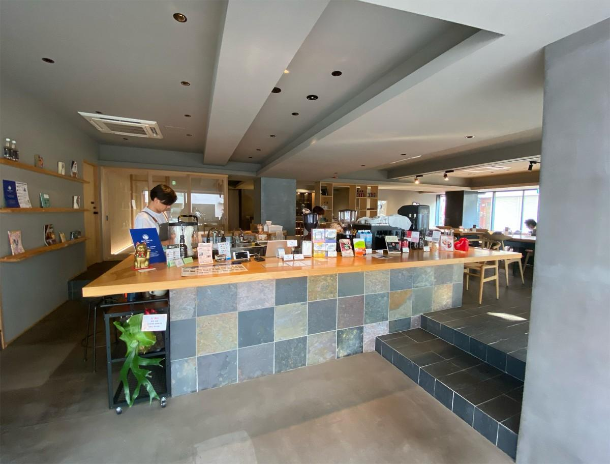

📷
喫茶晴龍（世田谷・上野毛）― アメフトOBが営む、犬OKの温かいカフェ
「日常使いできるアメフトOBのカフェ。
世田谷で、仲間とほっこりできる場所がここにある。」
世田谷で、仲間とほっこりできる場所がここにある。」
― FOOTBALL CONNECTION 編集部コメント
FOOTBALL CONNECTION MEMBER
オーナーの兼益宏行氏は法政二高・法政大学ORANGE OB。アメフトで培った仲間への思いを、上野毛の地でカフェという形で体現している。
☕ このお店について
世田谷区上野毛1丁目。二子玉川からも近いこのエリアに、
喫茶晴龍は静かに佇んでいる。
アメフトOBが営むこのカフェは、気負わず入れるアットホームな雰囲気が特徴。
定休日なしで毎日営業しており、地元住民にも愛されている。
犬OKの開放的な空間
大切な愛犬と一緒に来店できる数少ないカフェ。
アメフト仲間との集まりも、ペットを連れてのんびり過ごすのも歓迎。
Instagram（@cafeseiryu_dogsok）でも愛犬との写真が多く投稿されている。
毎日通える気軽さ
定休日なし、10:00〜18:30の安定した営業時間。
試合前のコーヒータイムも、試合後のほっこりタイムも、
いつでも迎えてくれる頼れる存在。
🏈 アメフト関係者への一言
「二次会じゃなくてカフェで集まりたい」——そんな時の答えが喫茶晴龍だ。
アメフトOBが営むカフェだから、アメフトの話が自然とできる。
試合のない週末、仲間と近況報告をしながらゆっくりコーヒーを飲む時間は、
これ以上ない贅沢だ。
世田谷・二子玉川エリアのアメフト関係者はもちろん、
遠くから来た仲間の待ち合わせ場所としても使いやすい。
「あそこのマスター、アメフトOBなんだよ」と仲間に自慢したくなる、
そんな温かい一軒だ。
📅 おすすめ利用シーン
仲間との
カフェ利用
カフェ利用
愛犬と
一緒に
一緒に
試合前後の
ほっこり
ほっこり
気軽な
初対面
初対面
作業・
打ち合わせ
打ち合わせ
週末の
ゆる集まり
ゆる集まり
🎫 FOOTBALL CONNECTION 来店特典
来店時にスタッフへ合言葉をお伝えください
「タッチダウン！」
合言葉で来店特典あり（詳細は店舗へご確認ください）
📋 基本情報
| 🏪 店名 | 喫茶晴龍 |
| 📍 エリア | 東京都世田谷区 上野毛 |
| 🚉 最寄駅 | 東急大井町線 上野毛駅（徒歩圏） |
| 🏠 住所 | 東京都世田谷区上野毛1-17-6 |
| 🕐 営業 | 10:00〜18:30（LO 18:00） |
| 🗓️ 定休日 | なし |
| 🍽️ ジャンル | カフェ・喫茶 |
| 🐕 ペット | 犬OK |
| 📞 電話 | 03-6432-1031 |
| @cafeseiryu_dogsok | |
| 👤 オーナー | 兼益宏行（法政二高・法政大学ORANGE OB） |
📝 店舗オーナーの方へ
情報の修正・追加・画像掲載をご希望の方はこちらのフォームよりご連絡ください。